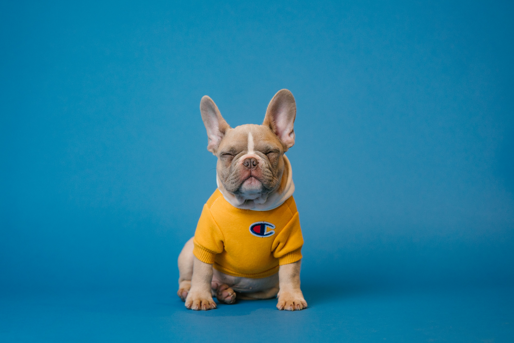

Pet face classification in image
Open console to check how the inception performs to a specific image with more detail


Open console to check how the inception performs to a specific image with more detail